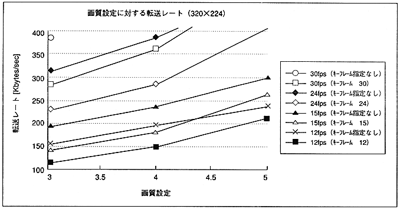
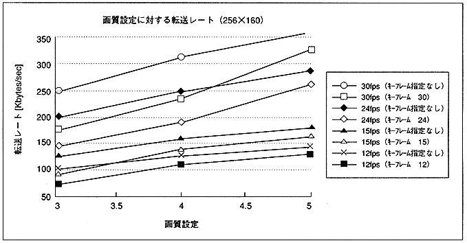

Return to previous page ｜ Return to menu ｜ Go to next page

Figure 2.2 Transfer rate for image quality setting (320 × 224)

Figure 2.3 Transfer rate for image quality setting (256 x 160)
Return to previous page ｜ Return to menu ｜ Go to next page